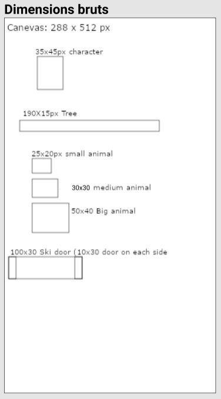
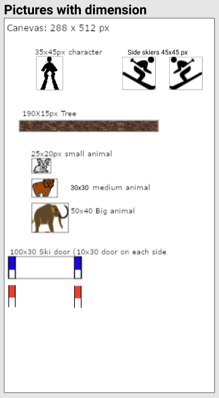
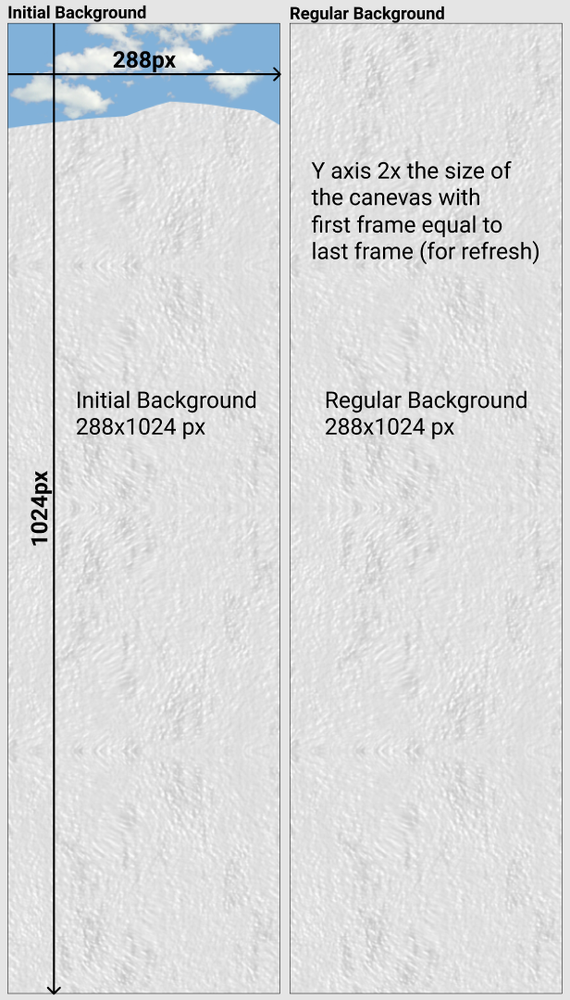
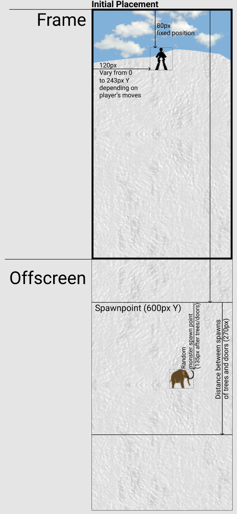
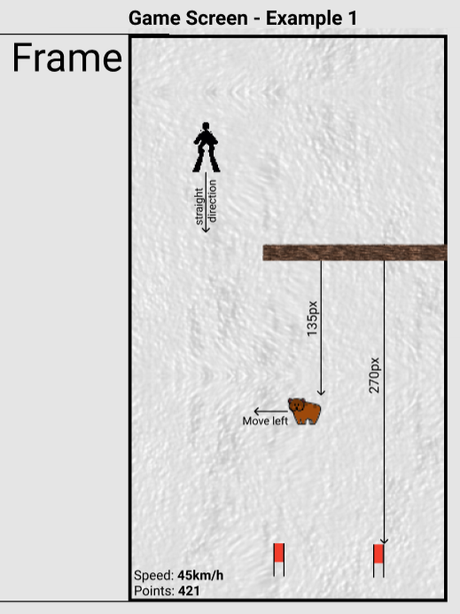
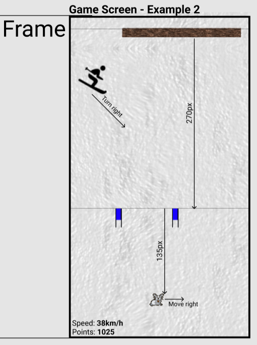
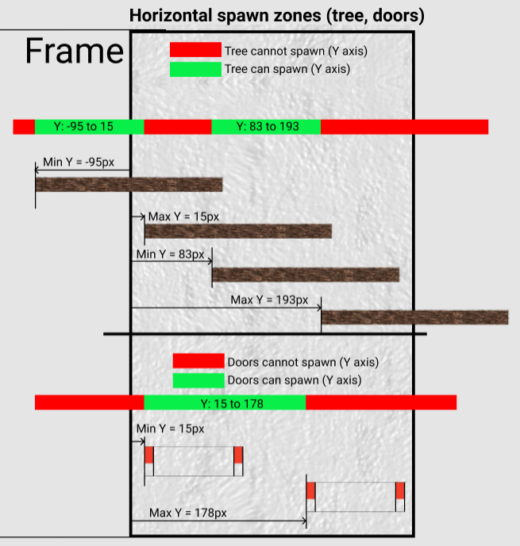
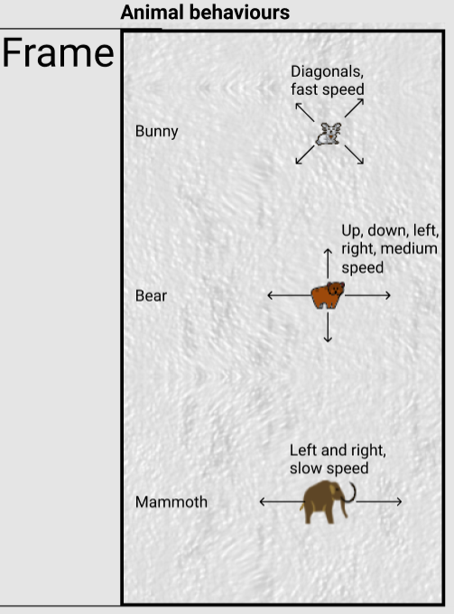

Maquettes et caractéristiques du jeu
Par Audrey, Loris et Jean-Marie le 13/03/2019 à 09:00
Voici un aperçu des images et dimensions à intégrer dans notre jeu suivi de toutes ses caractéristiques techniques.
Maquettes
Choix des images et dimensions
 
Arrière-plans et placement initial
 
Exemples de partie
 
Règle d'apparition des objets (tronc d'arbre et portes)

Comportement des annimaux

Caractéristiques techniques
Général :
- Le canevas est de forme rectangulaire avec les dimensions 288x512px.
- La direction du joueur va de haut en bas, le but étant d'aller le plus bas possilbe.
- Le but est d'aller le plus loin possible et de faire le score le plus grand.
- Le joueur perd lorsqu'il touche un tronc d'arbre ou un animal.
Mouvements du joueur
- Le joueur peut se déplacer de droite à gauche de l'écran.
- Le joueur ne peut pas sortir de l'écran.
- La position du joueur par rapport au sommet de l'écran est fixée à 80px non modifiable.
- La vitesse du joueur augmente au fil du temps.
- Le mouvement est reproduit en faisant défiler le fond d'écran et les obstacles.
Obstacles et apparitions
- Tous les 270px de distance, un élément apparait à l'extérieur du canevas à 600px du sommet.
- Cette appaition a 80% de chance d'être un tronc d'arbre et 20% de chance d'être des portes.
- Entre deux apparitions d'éléments, un animal à 20% de chance d'apparaitre.
- Les animaux peuvent être petits (lapins), moyens (ours) ou grands (mammouths).
Gestion des scores
- Le score augmente en fonction de la distance parcourue, soit 1 point par pixel parcouru vers le bas.
- Le joueur gagne 1000 pts supplémentaires s'il passe entre deux portes.
- Le score final est égal au score du joueur lorsqu'il touche un obstacle.
Déroulement d'une partie
- Le joueur choisit un pseudo et appuie sur start.
- L'écran initial du jeu apparait durant quelques secondes avec une musique d'intro.
- Le jeu commence et le joueur atteint un certain score
- Le joueur percute un obstacle et un écran de "game over" apparait.
- Le joueur peut alors choisir de rejouer ou visiter le tableau des meilleurs scores.
Le code source de l'application est disponible sur le github du projet.